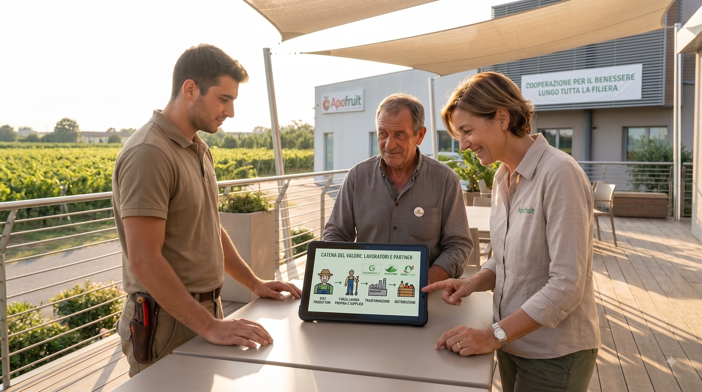

Lavoratori e catena di valore
Apofruit presta attenzione non solo alle condizioni di lavoro dei propri dipendenti, ma anche dei lavoratori dei soci e dei fornitori lungo tutta la filiera. La Cooperativa promuove attivamente il rispetto della salute e sicurezza nei luoghi di lavoro, estendendo questa attenzione anche ai partner.
Strategia e Analisi di Materialità (SBM-3)
Apofruit pone al centro del proprio operato il benessere e la sicurezza dei lavoratori, consapevole che una filiera sostenibile parte da condizioni di lavoro dignitose e tutelate. Nel settore agroalimentare, dove i lavoratori si confrontano spesso con condizioni occupazionali complesse, l'impresa investe costantemente in misure volte a garantire ambienti di lavoro più sicuri, orari sostenibili e relazioni occupazionali più stabili.
L’analisi di materialità svolta da Apofruit ha individuato i seguenti elementi di rilievo:
- Occupazione Sicura (Impatto Negativo): Rischio legato alla mancata garanzia di condizioni di lavoro eque nella catena del valore, comprendendo stabilità occupazionale, orari, salari adeguati, dialogo sociale, libertà di associazione, work-life balance, e salute e sicurezza.
- Rischio Reputazionale: Rischio Reputazionale: Rischio materiale rispetto ai rapporti commerciali con gli attori della distribuzione.
Gestione degli Impatti, Rischi e Opportunità
Politiche connesse ai lavoratori (S2-1)
- Estensione del Codice Etico: Il Codice Etico di Apofruit si estende a tutti coloro che forniscono materie prime, semilavorati, beni o servizi all’Azienda.
- Clausole Contrattuali: Il pieno rispetto delle disposizioni del Codice è condizione fondamentale per la stipula dei contratti; in caso di inadempimento, è prevista la possibilità di inserire clausole risolutive.
- Prevenzione del Lavoro Irregolare: Il Modello di Organizzazione, Gestione e Controllo (MOG) di Apofruit comprende una parte speciale dedicata al contrasto del lavoro irregolare, applicata sia all'interno dell'Azienda che lungo la catena del valore (fornitori, collaboratori esterni, partner).
Interventi su impatti rilevanti (S2-4)
- Certificazioni Sociali e Ambientali:Apofruit supporta i soci nell'ottenimento di certificazioni che tutelano gli aspetti sociali, la salute e i diritti umani
- Standard GLOBALG.A.P. GRASP: Questa certificazione garantisce l'applicazione di buone pratiche sociali e di sicurezza, verificate tramite audit periodici sul campo
- Controlli sui Fornitori: Su spinta dei clienti e dei grandi marchi, le fornitrici vengono sottoposte a controlli sul campo o alla richiesta di standard rigorosi come Naturland e Biosuisse.
Canali di Segnalazione e Rimedi (S2-3)
Procedura di Segnalazione di Condotte Illecite
La procedura di segnalazione è fondamentale per assicurare il rispetto del Codice Etico e coinvolge attivamente sia i fornitori che i soci della Cooperativa.
- Piattaforma Dedicata: È disponibile una piattaforma informatica che permette di segnalare condotte illecite, irregolarità o reati (tentati o consumati) di cui si abbia diretta conoscenza.
- Soggetti Legittimati: Oltre ai dipendenti diretti, possono effettuare segnalazioni i lavoratori e collaboratori dei fornitori, i soci e le persone con ruoli di amministrazione, direzione e vigilanza.